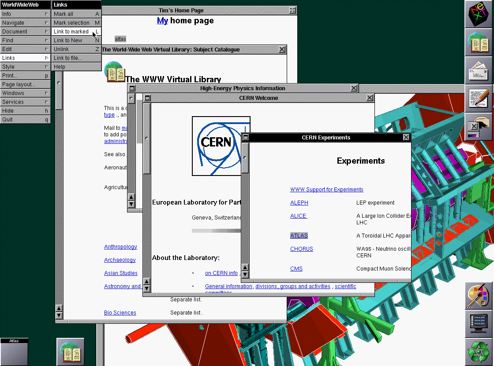
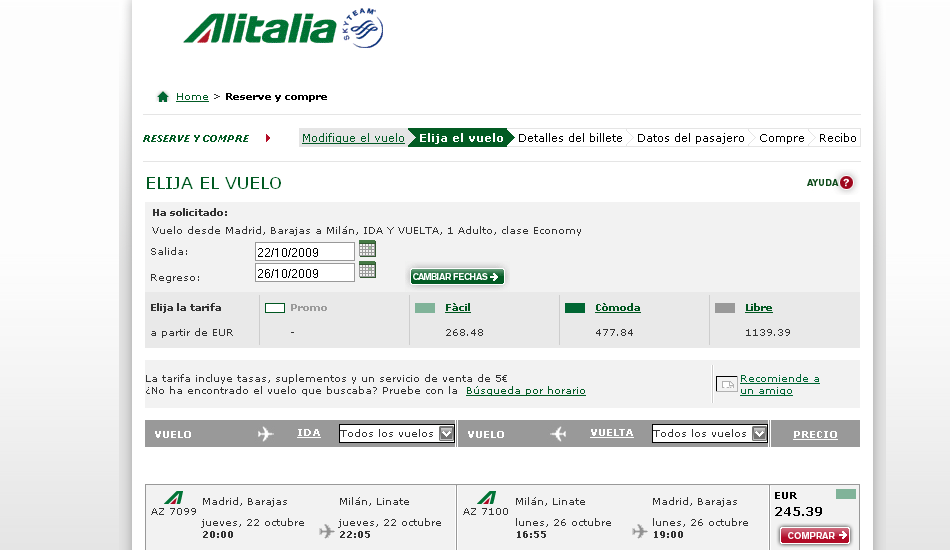
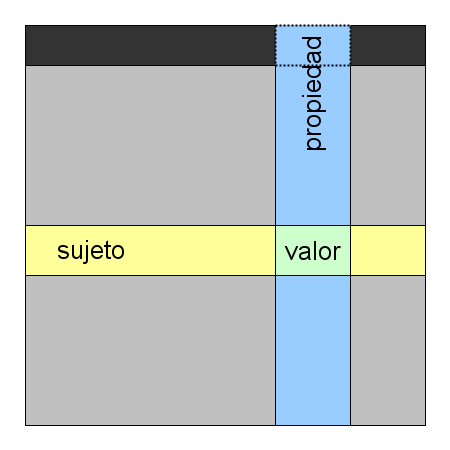
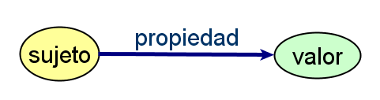
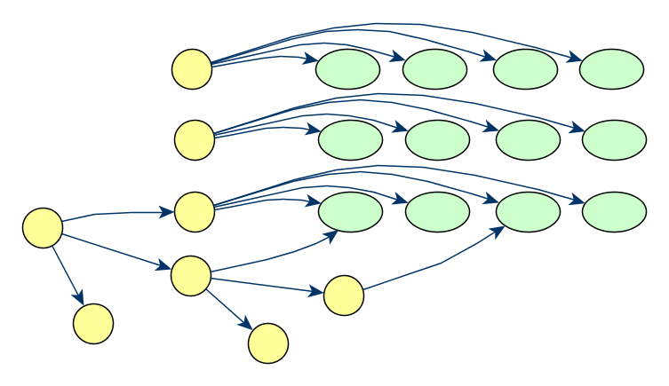
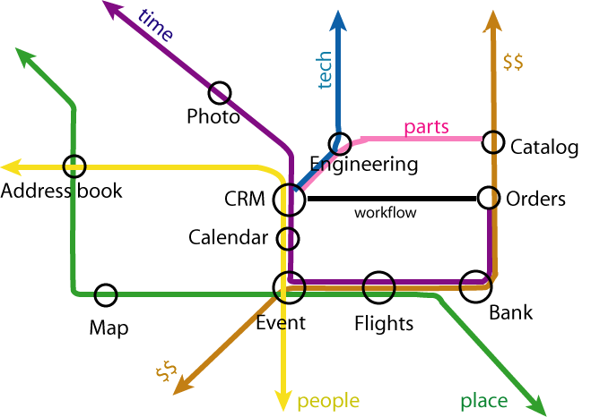
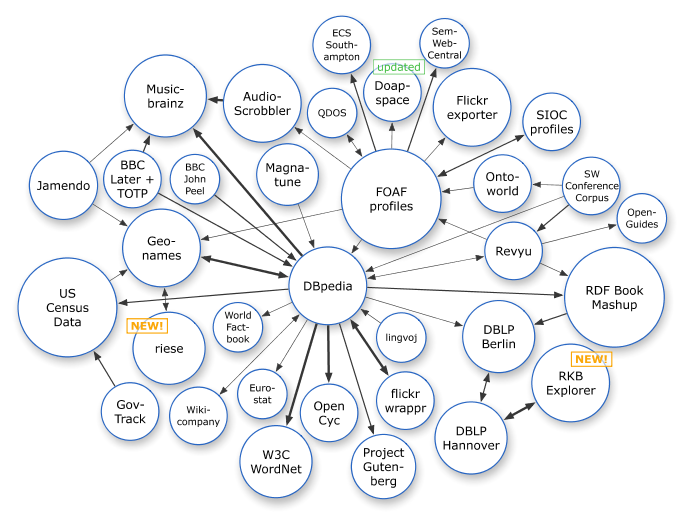
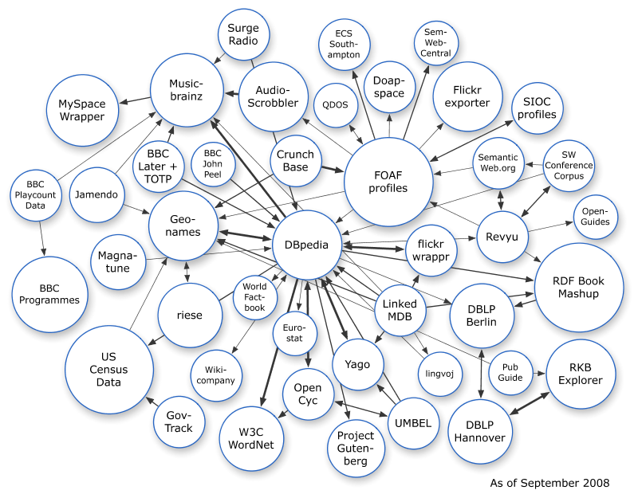
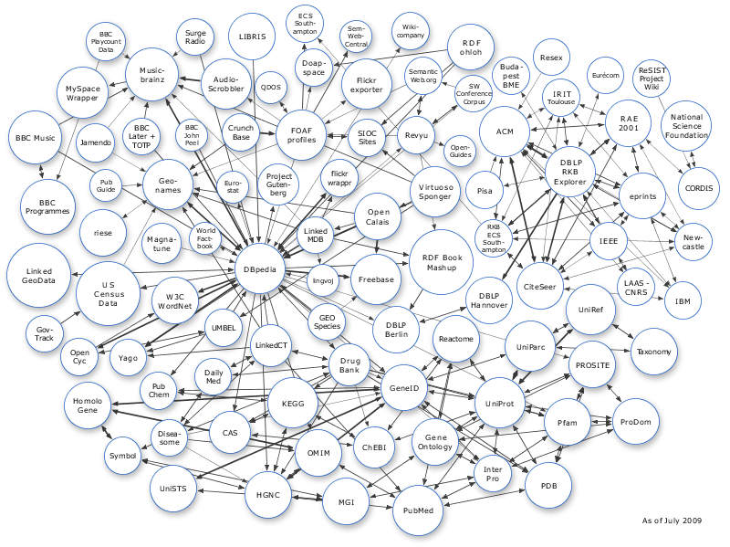

W3C y Linked Open Data
Jornadas de Interoperabilidad
Instituto Tecnológico de Informática (ITI)
Valencia, 15 Oct 2009
World Wide Web Consortium

Desde el origen de la Web...
- Modelo de gestión de información en el CERN (Tim Berners-Lee, 1989)

Information Management: A Proposal, Tim Berners-Lee, CERN, March
1989, May 1990, [http://www.w3.org/History/1989/proposal.html]
WorldWideWeb

La Web Tradicional, para humanos
- Representa la información usando
- lenguaje natural (español, inglés, chino,...),
- gráficos, multimedia, diseños de las páginas
- Los humanos podemos procesar esta información (fácilmente)
- Deducimos hechos desde información parcial
- Creamos asociaciones mentales
- Asimilamos información desde distintos sentidos
- aunque, existen personas con ciertas limitaciones
- Ejemplo...
Deseamos organizar un viaje a Milán...
...seleccionamos la aerolínea italiana

...la de bajo coste

...o con ayuda de un buscador

Buscamos alojamiento... barato

... o a través de una agencia (italiana)

... o algo de confianza

¿Y si nuestro viaje no se acaba ahí?

Integración de la información
- Hemos buscado
- Diversa información,
- en distintas fuentes,
- desde diferentes servicios,
- con representación distinta (distintos formatos),
- incluso, en distintos idiomas
- Podemos integrar esta información
- Proceso tedioso y dependiente de nuestra pericia
- Muchos otros casos cotidianos...
Ciencias de la Salud

Redes Sociales
- Omnipresentes en estos días
- LinkedIn, eConozco, Friendster, Facebook,...
- Los datos no son intercambiables
- ¿Cuántas veces has tenido que introducir los contactos?
- Las aplicaciones deberían poder intercambiar los datos de una forma estándar
Integración de Bases de Datos
- Las BBDD son diferentes en estructura y en contenidos
- Muchas aplicaciones necesitan manejar varias BBDD
- Tras la fusión de compañías
- Combinación de información administrativa (e-Government)
- Investigación bioquímica, genética, farmacéutica
- ...
- El caso es que la mayoría de estos datos están en la Web
- (aunque no necesariamente públicos)
Objetivo: La Web de los Datos
Usar los datos en la Web de la misma forma que los documentos:
- Enlazar los datos entre sí
- Usar los datos como queramos (visualizarlos, combinarlos, etc)
- Cualquier aplicación debería poder interpretar cada parte del dato
¡Interoperabilidad!
¿Esto no es lo que ya hacen los "mashups"?...
Ejemplo de "mashup"

... en parte, sí (Interoperabilidad ad-hoc)
- Explotan la potencia de la Web de Datos
- Pero están forzados a buscar soluciones ad-hoc
- Servicios Web exponiendo los datos
- Distintas APIs, distinta estructura
- No se usa una forma estándar para acceder a los datos
La "Web de Datos" se debería comportar como la "Web de los Documentos"
...de una forma estándar
Pero... las máquinas son ignorantes
- La información parcial es inútil
- Hacer que ciertos recursos tengan sentido es difícil (multimedia)
- Describir analogías automáticamente es difícil
- La combinación de información automáticamente es difícil
- ¿Es igual
<b1:creator>, que <b2:author>, o que <b3:autor>?
- ¿Cómo combinar distintos niveles jerárquicos del XML?
Evolución de la Web Tradicional...
- Los humanos podemos entenderlo (más o menos)

... a la Web Semántica
- Lo entendemos nosotros y las máquinas

¿Cómo funciona esto?
- Se aplica el potencial de las URIs a conceptos
- Modelado de las cosas reales (conceptos y sus relaciones)
- no documentos ni tablas de las bases de datos
- Se enlazan los datos entre sí
- Se exponen
Web Semántica: Todo tiene un URI
- No digas "Nueva York"
- ni "La Gran Manzana",
- ni "New York",
- ni "Nova York",
- ni "Niujorkas",
- ni "뉴욕",
- ...
di http://sws.geonames.org/5128581/
Modelado estándar de los datos

- Hacer accesible lo que quieras ...
- ... dentro de una empresa o entre varias ...
- ... en la Web
Las Bases de Datos clásicas

El elemento de la Web Semántica

- Simplicidad y consistencia matemática
- Resource Description Framework (RDF)
- RDF -> Datos
- HTML -> Documentos
- Se puede codificar en XML
La Web Semántica incluye tablas,...

...árboles

... cualquier cosa

Aplicaciones conectadas por conceptos

Materializando la Web Semántica

- Mecanismos específicos para las máquinas:
- Evita la ambigüedad en la identificación (
URI)
- Describir los recursos (RDF)
- Modelar ontologías (OWL)
- Realizar búsquedas (SPARQL)
- Expresar reglas y su intercambio (RIF)
- establecer lógica, comprobaciones, certificados de confianza, etc.
- = Web 3.0 (Markoff, NYT Nov 2006)
Integración Empresarial Actualmente

Integración Empresarial sobre el "Bus RDF"

Proyecto LinkingOpenData
- Objetivo:
- Exponer conjuntos de datos (RDF)
- Enlazar distintos conjuntos de datos
- Posiblemente establecer puntos de consulta (SPARQL)
- Miles de millones de tripletas, cientos de millones de enlaces...
- La base para la Web de Datos
Nube de Linked Open Data (marzo 2008)

Nube de Linked Open Data (septiembre 2008)

Nube de Linked Open Data (julio 2009)

Pero... ¿todo esto funciona?
¡Sí!
Mejora de las búsquedas (BOPA)

Recomendaciones de Turismo en Zaragoza

Integración de conocimiento de Medicina China

- Sobre 80 bases de datos, con 200.000 registros en cada una
- Usa una capa semántica


{kind=link}